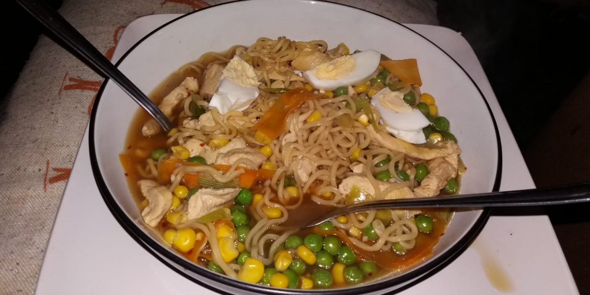

Ramen
Ramen is a really simple dish that doesn't take more than a few minutes to make. It tends to be quite salty due to the soy sauce, however when done properly, its high sodium level is very much worth it.
- Serves: 1
- Preperation time: 15 minutes
- Cooking time: 10 minutes
You will need:
- 1 medium saucepan
- 1 non-stick frying pan
- A mixing spoon
- 1 sharp knife
- 1 bowl
Ingredients
| Ingredient | Quantity |
|---|---|
| Water | 2 cups |
| Egg/Rice noodles | 1 handful/pre-portioned ball |
| Oil | 1 tbsp |
| Raw chicken | 1 breast |
| Spring onion | 2-3 stalks |
| Peas | 1/2 a cup |
| Sweetcorn | 1/2 a cup |
| Garlic | 1 clove |
| Soy sauce | 4 tbs |
| Ginger powder | 2 tbsps |
| Pepper | A pinch |
| Optional ingredients | Quantity |
| Raw beef | Equal to 1 chicken breast |
| Boiled egg, halved or quartered | 2 eggs |
| Carrot, chopped very thin | 1/2 a carrot |
| Chilli, dried | 1 pinch |
Method
- Step 1
- Slice the chicken breast and the optional beef thin, place frying pan onto a hob and add the meat. Put on a medium heat and fry until the strips are no longer raw. When the strips are fully cooked, place to the side.
- Step 2
- Fill the medium saucepan with 2 cups of water and leave to boil over a high heat. Slice the spring onion and mince the garlic.
- Step 3
- Add chicken, beef, spring onions, garlic, ginger powder, pepper, dried chilli, peas and sweetcorn.
- Step 4
- When the water is boiling, add the ramen noodles.
- Step 5
- Wait for the noodles to soften before adding the soy sauce. The soup should be a transparent brown colour with a slightly salty flavour, however, if your soup does not match this description, try adding a touch more soy sauce. When your ramen is finished, pour into a bowl, perhaps adding a sliced boiled egg on top, and enjoy.